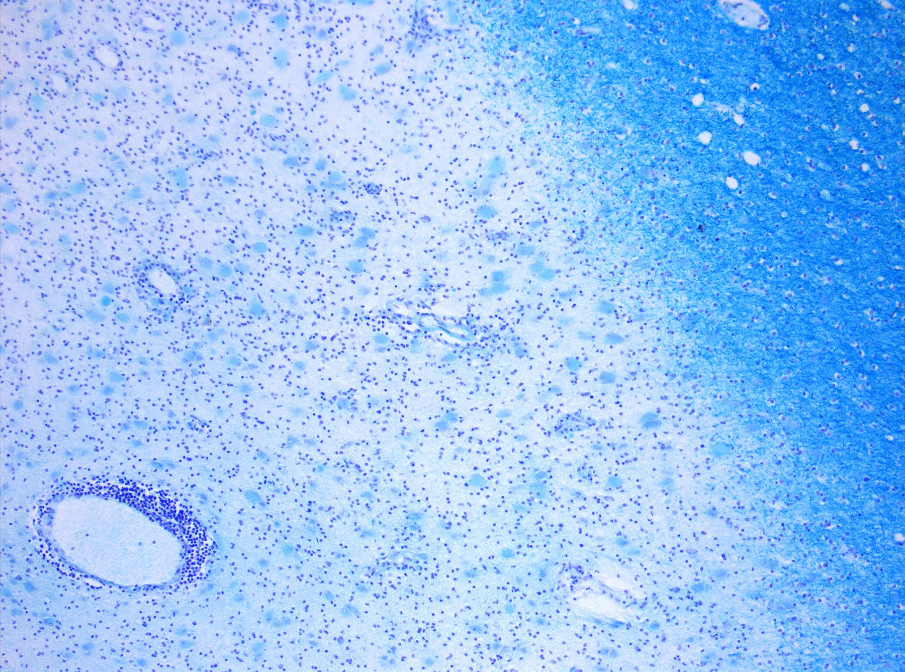

Esclerose múltipla é doença imunomediada (autoimune). O indivíduo forma anticorpos / células que atacam a bainha de mielina do sistema nervoso central. Por isso é doença desmielinizante.
Só SNC
É doença específica do SNC: não pega sistema nervoso periférico — só central.
Alvo clássico: mulher jovem/fértil
Como boa doença imunomediada, o alvo primordial são as mulheres jovens — padrão mulher em idade fértil. Pode ocorrer em idoso ou em menino, mas não é o padrão.
Regra de ouro
EM = imunomediada + desmielinizante + SNC apenas + alvo clássico mulher jovem.
Resumo operacional: quatro âncoras; se faltar “SNC apenas”, o conceito vaza para polineuropatia.

Desmielinização do SNC — lesão de EM, Klüver-Barrera 10×. A bainha perdida é o alvo imunomediado.
O corte mostra a área desmielinizada no SNC: o sistema imune ataca a bainha de mielina central — não raiz, não nervo periférico. É o “desmielinizante + SNC apenas” das quatro âncoras.
PisoSNC “atacável” (cérebro, cerebelo, tronco, medula) vs SNP “fora de escopo”. A EM não pega SNP.
O próximo passo é por que o quadro é tão amplo — a mielina.
Quiz
Q1. A EM ataca prioritariamente:
Gabarito: B. O alvo imunomediado é a bainha de mielina do SNC.
(A) é SNP — fora de escopo da EM. (C) placa e (D) músculo não são o alvo desmielinizante.
Por que se cai na A: confundir desmielinizante com polineuropatia periférica.
Q2. O padrão demográfico clássico é:
Gabarito: C. O alvo primordial é mulher jovem / idade fértil.
(A) pode ocorrer em idoso, mas não é padrão. (B) criança não é o clássico. (D) a frequência não é uniforme.
Por que se cai na A: lembrar de um caso atípico e generalizar como se fosse o estereótipo.